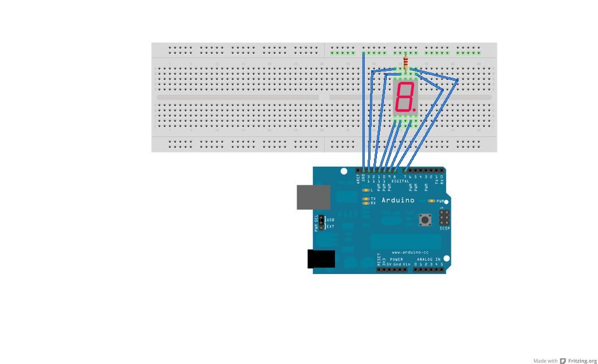

Luego de explicar como se enciende y apaga de manera constante un LED en un Arduino, ahora se mostrará como conectar un Display 7 segmento de cátodo común.
El display incrementará de 1 a 9, luego pasa a valor 0 y vuelve a contar desde 1 a 9, a intervalos de 1 segundo.
Requerimientos:
- Arduino Uno.
- Protoboard.
- Cables.
- Display 7 segmentos de cátodo común.
- Resistencia de 220 Ohms.
En la siguiente figura se muestra la identificación de los LEDs del display 7 segmentos:

El esquema de conexión es el siguiente:

Conexiones:
- Pin a - Digital 7
- Pin b - Digital 8
- Pin c - Digital 9
- Pin d - Digital 10
- Pin e - Digital 11
- Pin f - Digital 12
- Pin g - Digital 13
La siguiente figura se muestra el montaje del circuito:

El código del programa se muestra a continuación:
int pausa=1000; // define la pausa entre cada digito
#Se definen los Pines de salida al display 7 segmentos
void setup()
{
pinMode(7, OUTPUT);
pinMode(8, OUTPUT);
pinMode(9, OUTPUT);
pinMode(10, OUTPUT);
pinMode(11, OUTPUT);
pinMode(12, OUTPUT);
pinMode(13, OUTPUT);
}
//Se define la funcion display que recibe 7
//variables y se asignan a cada una de sus salidas
void display (int a, int b, int c, int d, int e, int f, int g)
// Funcion del display
{
digitalWrite (7,a);
digitalWrite (8,b);
digitalWrite (9,c);
digitalWrite (10,d);
digitalWrite (11,e);
digitalWrite (12,f);
digitalWrite (13,g);
}
//Funcion principal que genera un lazo continuo
void loop()
// Dependiendo de cada dígito, se envía a la función display
// los estados (0 y 1) a cada uno de los segmentos
{
display (1,1,1,1,1,1,0); //escribe 0
delay(pausa);
display (0,1,1,0,0,0,0); //escribe 1
delay(pausa);
display (1,1,0,1,1,0,1); //escribe 2
delay(pausa);
display (1,1,1,1,0,0,1); //escribe 3
delay(pausa);
display (0,1,1,0,0,1,1); //escribe 4
delay(pausa);
display (1,0,1,1,0,1,1); //escribe 5
delay(pausa);
display (1,0,1,1,1,1,1); //escribe 6
delay(pausa);
display (1,1,1,0,0,0,0); //escribe 7
delay(pausa);
display (1,1,1,1,1,1,1); //escribe 8
delay(pausa);
display (1,1,1,0,0,1,1); //escribe 9
delay(pausa);
}
En la siguiente figura se muestra la conexión:

Para terminar, se muestra un vídeo con el contador funcionando:
¡Haz tu donativo! Si te gustó el artículo puedes realizar un donativo con Bitcoin (BTC) usando la billetera digital de tu preferencia a la siguiente dirección: 17MtNybhdkA9GV3UNS6BTwPcuhjXoPrSzV
O Escaneando el código QR desde la billetera:

Comments !